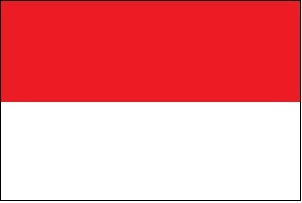

Bendera Negara Indonesia
Bendera Negara Indonesia yang secara singkat disebut bendera negara adalah Sang Merah Putih. Sang Saka Merah Putih, Merah Putih, atau kadang disebut Sang Dwiwarna (dua warna). Bendera Negara Sang Merah Putih berbentuk empat persegi panjang dengan ukuran lebar 2/3 (dua-pertiga) dari panjang serta bagian atas berwarna merah dan bagian bawah berwarna putih yang kedua bagiannya berukuran sama. Bendera kebanggaan Indonesia ini merangkum nilai-nilai kepahlawanan, patriotisme, dan nasionalisme.